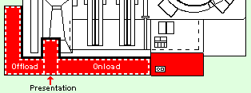
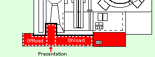
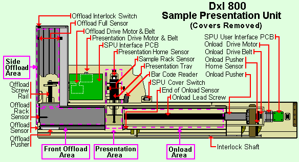
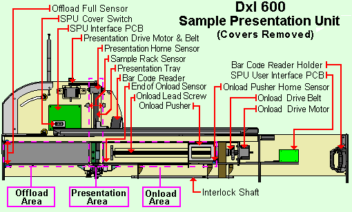

Sample Presentation Unit Operating Principles
Purpose
This document details the operating principles for the sample presentation unit (SPU).
Module Function
The function of the SPU is to:
- Allow the operator to load and unload samples.
- Identify sample racks and sample containers.
- Present racks of sample containers to the sample pipettor.
- Present pipetted racks for off-load.
Location


Operational Overview
| Step | Action |
|---|---|
| 1 | Operator places sample containers (with bar code labels orientated to the side of the rack with a bar code label) into sample racks. |
| 2 | Operator determines if the instrument is running tests.
If the instrument is running tests, then select one of the two load buttons, 'routine' or 'stat', then go to the next step. If the instrument is not running tests, then go to the next step. |
| 3 | Operator opens the SPU cover. |
| 4 | Operator loads the racks onto the onload area of the SPU.
Note: The racks must be loaded with the rack bar code facing the right side of the instrument.
|
| 5 | Operator closes the cover triggering the SPU cover switch and signaling the onload pusher to advance the rack towards the presentation area. When a rack is confirmed to be in position by the end-of-onload sensor the onload pusher stops.
Note: The door is automatically locked when the Onload Pusher leaves the home position.
|
| 6 | Presentation tray moves to the onload position to accept a sample rack and the onload pusher moves the first sample rack onto the presentation tray. |
| 7 | Presentation tray moves in and each sample bar code and rack bar code are read. Background bar code labels are used to determine or verify an empty position in the sample rack. |
| 8 | After sample and rack identification, the presentation tray returns to the onload position allowing the onload pusher to advance that rack and deliver the next rack onto the presentation tray. |
| 9 | When the presentation tray is full (four racks DxI 800, two racks DxI 600) or there are no more racks in the onload area, the tray moves into the pipetting position and presents the rack to the sample pipettor for sample aspiration. |
| 10 | After sample aspiration, the presentation tray moves out to the onload position. |
| 11 | Onload pusher advances the pipetted rack to the front off-load area. |
| 12 | Pipetted sample racks continue to be moved to the front off-load area until the off-load rack sensor signals that the front off-load area is full. Then the off-load pusher simultaneously moves four racks into the side off-load area. (DxI 800 only). On DxI 600, the operator is alerted that the offload area is full and needs attention. |
| 13 | Off-load full sensor signals when the side off-load area is full (DxI 800). |
| 14 | Operator can remove racks from the side off-load area at any time, unless the area is full. If the area is full, the operator is alerted. Some or all of the racks must be removed (DxI 800). |
Component Locations


Component Functions
| Component | Description and function |
|---|---|
| Bar Code Reader | Reads sample container bar codes, sample rack bar codes, and stationary background bar codes to determine or verify an empty rack position.
The DxI instrument is configured to read the same types of bar code labels as Access and Access 2. Those label types are:
Note: The internal bar code reader discriminates between these four approved symbologies. The DxI and Access 2 host interface are the same.
|
| Belts, Drive | Used with the stepper motors and drive gears for motion control. This module has three drive belts:
|
| Motors, Stepper | Stepper motors provide motion control. This module has three stepper motors in the DxI 800 and two stepper motors in the DxI 600:
|
| Off-load Area, Front | Area of the SPU that receives sample racks after aspiration. |
| Off-load Area, Side | Area of the SPU that receives pipetted sample racks after the front off-load is full (DxI 800). |
| On-load Area | Area of the SPU where the operator loads sample racks. |
| PCB, SPU Interface | Contains the input and output connections from this module to the instrument. |
| PCB, SPU User Interface | Contains the input and output connections to and from the SPU switch plate, onload sensor and motor, SPU cover sensor, and the SPU interface PCB. |
| Presentation Area | Area of the SPU that receives sample racks, presents them to the bar code reader, presents them for aspiration, and temporarily holds them after they are moved out of the aspiration area. |
| Pusher, Off-load | Moves aspirated sample racks to the side off-load area when the front off-load area is full (DxI 800). |
| Pusher, On-load | Moves loaded sample racks onto the onload area. |
| Screw Rails | Used with stepper motors and drive belts for motion control of:
|
| Sensors | These sensors are used in the SPU:
|
| Switches |
SPU has two switches:
|
| Tray, Presentation | Presentation Tray:
|
Interacting Devices
The sample presentation unit interacts with the sample pipettor module.